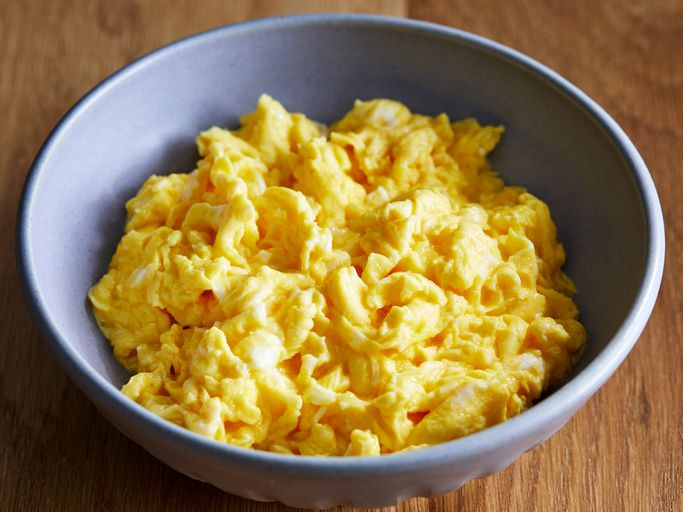

Eggs Recipe

Description
In order to make the best eggs its a simple propcess you will only need butter , Eggs and cheese
Ingridients
Steps to making the best eggs
- Heat A Pan at medium heat
- Place Butter in the pan
- Crack Eggs inside the pan
- Scramble eggs inside the pan and add a pinch of butter
- When the eggs start to form add the cheese and turn the heat low
- Keep Scrambling until it is at the consistancy that you like